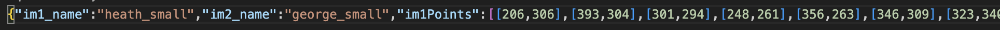
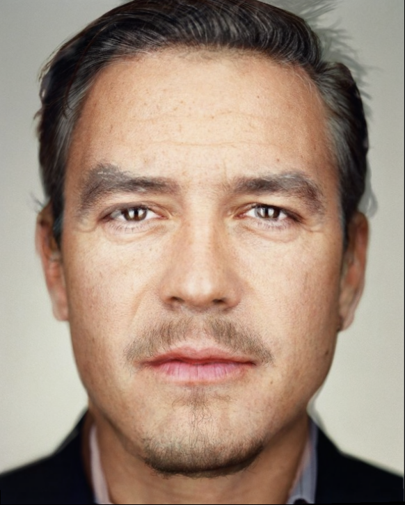
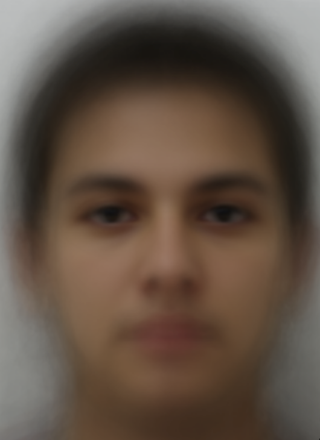
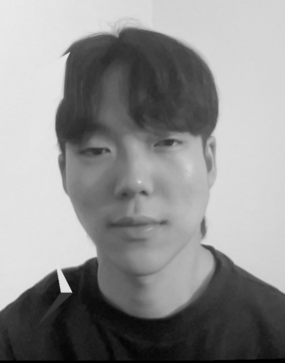
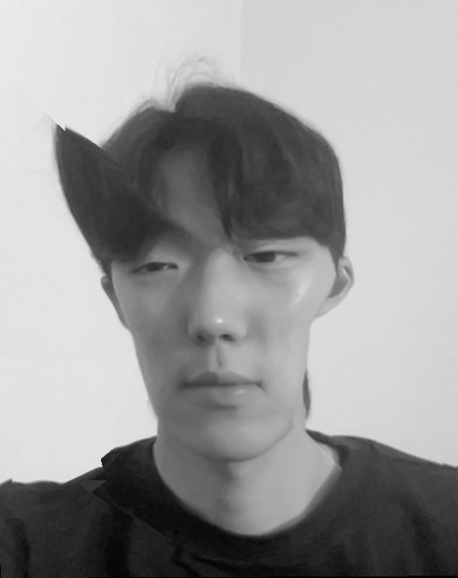

CS 180 Fall 2024
Project 3: Face Morphing
Eugene Han
SID: 3036560489
Part 1: Defining Correspondences
Defining correspondence points for faces that are to be merged is a crucial process. This is because it is possible to compute the Delaunay triangulation and the mean of the correspondences to complete the merging process. I used the existing labeling tool from last year's student to select more than 70 correspondence points for two celebrity faces: George Clooney and Heath Ledger.

Correspondence points recorded in JSON
Part 2: Computing the Mid-way Face
Before actually morphing the two faces, I computed the mid-way face between the two, which was computed by getting the average shape, warping both faces into that shape, and averagign the colors together.
To go into the details, I first collected the defined correspondence points for each image and computed the average of these points for the midway geometry. Then, I triangulated the face structures using Delaunay triangulation based on the average points. After this, I warped both faces to the midway geometry, and finally blended the warped faces to create the finaly midway face through cross-dissolving.
The following image is the midway face of the two faces.

Part 3: The Morph Sequence
The midway face is one face that appears during the morphing sequence. To get a full overview of the morphing sequence, I warped each face into an intermediate geometry, which is cacculated based on the current frame's progress in the morph. Then, the pixel values of both faces are blended together based on the progress, and all of these frames will be compiled into a single video that shows the smooth transition from one face to another. This creates a full morphing sequence as a whole.

Part 4: The Mean Face of a Population
I collected a dataset of faces from the FEL Database, where there is a set of neutral faces and another set of smiley faces. Using this dataset, I computed the average shape of the faces of the whole population, morphed each of the faces into the average shape, and computed the average face of the population through this process. I also attempted warping my face into the average geometry and vice versa.
|

Neutral face average
|
Smiley face average
|
 Warping average face to my geometry
Warping average face to my geometry
|

Warping my face to average geometry
|
|
Part 5: Caricatures: Extrapolating from the Mean

a = 1.5
To get the caricature of my face, I exaggerated the features based on the difference between the original face and the mean face. I first got the correspondence points of the original face extrapolated beyond the mean face's points using a scalar factor of alpha. Then, I used Delaunay triangulation to warp the original face into the extrapolated points.